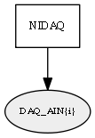

Global overview
All modules
All variables
All commands
Mission files
Pipelines
Variable: DAQ_AIN{i}
Variable info:
Variable name
Short description
Who publishes it?
Who subscribes to it?
DAQ_AIN{i}
NI DAQ Analog Input (AIN) voltage readings for the i'th channel (0-based, in the order specified in the .moos file)
NIDAQ
Variable graph:

Detailed description:
NI DAQ Analog Input (AIN) voltage readings for the i'th channel (0-based, in the order specified in the .moos file)
Page generated by
Mooxygen 1.1.0
at Thu Jan 22 11:30:21 2015